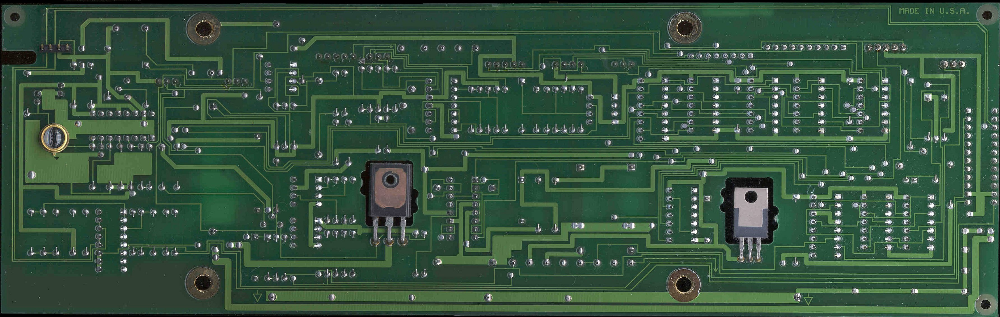

<!--
  Mirrored from https://www.repairfaq.org/sam/laser/5517/5517pcb1b.htm
  Sci.Electronics.Repair FAQ / Sam's Laser FAQ / Silicon Sam's Technology Resource.
  Copyright (c) Samuel M. Goldwasser and Filip M. Gieszczykiewicz, and the contributing authors
  where marked (From: ...). All rights reserved. Reproduced unaltered and free of charge under the
  fair-use terms at https://www.repairfaq.org/sam/copyright.htm. The original site: https://www.repairfaq.org/
  Only fonts and colors are restyled, as those terms permit.
-->
<HTML>
<!body bgcolor="#000000" text="#FFFFFF" link="#8080FF" vlink="#008080">
<body bgcolor="#000000" text="#eee0d0" link="#ffdd00" vlink="#ff9900">
<div class="rfm-source"><small>Source: <a href="https://www.repairfaq.org/sam/laser/5517/5517pcb1b.htm">https://www.repairfaq.org/sam/laser/5517/5517pcb1b.htm</a> &middot; Original site: <a href="https://www.repairfaq.org/">repairfaq.org</a> &middot; Unaltered mirror with a <a href="../../../../index.html">companion guide</a></small></div>

<TITLE>Hewlett Packard 5517 Laser Type I Control PCB - Back View</TITLE>
<BODY>
<p>
<center>
</A>
<p>
<body>
</html>
